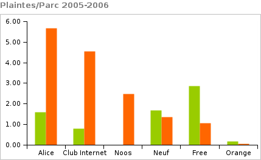

Plaintes à haut débit en 2006
Je reviens après quelques semaines, vacances lointaines, autres priorités, etc. L’Afutt publie aujourd’hui dans le JDD son observatoire annuel des plaintes dans le secteur des télécoms. J’y ai ajouté le ratio plaintes/parc qui permet de voir chez qui les clients sont les plus mécontents. Résultat des courses :
| Opérateur | Plaintes | Pourcentage | Parc | Plaintes/parc |
|---|---|---|---|---|
| Alice | 1849 | 31% | 5.4% | 5.66 |
| Free | 1310 | 22% | 20.3% | 1.07 |
| Club Internet | 1267 | 21% | 4.6% | 4.55 |
| Neuf | 834 | 14% | 10.1% | 1.36 |
| Noos | 619 | 10% | 4.1% | 2.49 |
| Orange | 175 | 3% | 48.6% | 0.06 |
On peut alors comparer ce taux de plaintes à celui publié dans l’observatoire 2005 :

Free, qui en 2005 réalisait 51% des plaintes avec à peine 17% du parc, a bien redressé la barre. Neuf, qui entretemps a absorbé AOL et son excellente satisfaction client, s’améliore également. Enfin Orange conserve le haut du panier.
En revanche Alice et Club Internet voient leur taux de plaintes exploser. Club Internet qui est à vendre connaît des difficultés financières et ceci explique sans doute cela. Pour Alice, il semble que ce soit la qualité de service qui soit transparente…
Le JDD note certes que les bons résultats d’Orange s’expliquent par le fait que l’opérateur historique maîtrise l’installation de bout en bout. Cela dit pour le client c’est surtout le résultat qui compte…